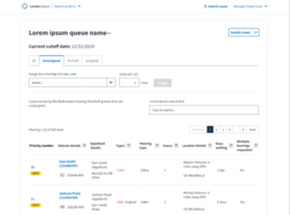

Overview
Problem
Appeal hearings are scheduled by hearing coordinators assigned to different regional offices (RO), and Veterans are placed into regional office buckets based on distance. This was creating a bottleneck where hearings that required more priority were not being scheduled within an appropriate timeframe because coordinators could only assign to a specific RO or all the timeslots were booke for that RO.
Challenges faced
- I was personally not as familar with this part of the software, given that another UX was typically the POC for it.
- Working with a new development team that works a bit differently than other dev teams worked with in the past.
- While requirements gathering and ideating the first round of wires for this, UX discovered a major obstacle with the proposed solution. A new initiative solving this obstacle was created while still requirements gathering for this intiative, and UX was also involved with this second intiative.
Timeline
June 2024-July 2025
Role
UX Designer
Solution breakdown
- Remove the limitation of only scheduling Veterans to a specific RO.
- Remove the limitation of assigning hearing coordinators to a specific RO.
- Create a priority queue for assigning cases to hearing coordinators.
- Implement a failsafe functionality to prevent double-booking of a timeslot now that RO assignments have been removed for hearing coordinators.
Process
1. Mapping out the user flow
We approached the requirements gathering phase by meeting up with the stakeholders, getting a better understanding of the ask, and then exploring the existing functionality internally amongst ourselves. The Hearings functionality in the application was mature and we had to further understand how the legacy code worked before altering both the funtionality and the business processes of the stakeholders.
From there, we continued with our weekly cadence of stakeholder meetings to continue asking more questions and presenting initial wireframes until we were able to flesh both requirements and wireframes out enough.
Unlike past experiences with other initiatives, it was a welcome surprise to see the level of scope constraints the hearings development team had. We worked together with the stakeholders to devise phases of development and stuck to an MVP level for both initiatives. This allowed for a quick delivery of the work.
1.Intiative One: The Priority Queue
A Veteran on a hearing docket was defined as having priority if for example, they were 65 or older. Or if they had an illness. The level of priority was determined by several of these factors and a hearing coordinator was required to schedule by priority.
A priority algorithm was created and supervisors would go into this queue and assign from the top of this priority list to a hearing coordinator of their choosing. If the same user had multiple hearings requested that still needed scheduling, but had different priortity numbers due to an older receipt date, an exception could be made to group these hearings together and present them as a package to the judge. For this reason, UX and devs also had to design a multiple hearings functionality.


Assignment and unassignment functionalties for this intiative were kept very limited so as to decrease development time. UX had to design for these limitations while still keeping these two functionalities user-friendly enough. Although we initally advocated for checkboxes to allow users more control as to what cases to unassign, we ultimately landed on a middle ground through various feedback and working sessions with the client.


We also opted for keeping assignment functionalities on the same priority queue to decrease development time and stakeholder cost, as well as less navigation for the user.


2. Initiative Two: The Locking Mechanism
The current business practice was that coordinators scheduled hearings in a form, based on what RO they were assigned to. During the solutioning of the first intiative, we quickly realized that by lifting the RO assignments for Hearing Coordinators, multiple coordinators could be scheduling in the same RO at the same time.
We proposed a brand new functionality for our software: Multi-user editing in a form and locking fields to prevent editing.

The scheduling form was pre-existing, so UX ideated on how to communicate to users that a timeslot was locked and allow users to schedule mutliple hearings for the same veteran without changing too much of the form's structure.
Conditions that needed to be met were, as follows:
- A user could only have a time slot locked for 15 minutes. How do we account for 15 minutes of inactivity? What happens when a user's 15 minutes are up?
- What different areas of the application besides the form could be affected by this new mechanism?
- How do we account for a user who schedules a hearing before their 15 minutes are up but need to schedule more hearings for that same eteran?
At first we tried sticking to existing patterns, like inline errors or tooltips and having a message pop up on hover of a timeslot. There were 508 concerns with this approach, however.

So we opted for a tradeoff. It would be alot of information tucked into a dropdown option, but the information was permanent and could be easily read out by a screenreader.

Locked slots would be disabled but still readable and provide a live timer of how long the current user had in that slot. If a slot were locked by the current user, a blue background would be used to distingush that slot from the rest of the dropdown options.


We also provided live countdowns on alerts for coordinators in other pages throughout the site that were affected by the locking mechanism intiated in the scheduling form.

Reflections
Working on this intiative might have been one of my favorite quarters during Booz Allen. I worked with a development team that I didn't typically work with but that was a refreshing change of pace. The development team felt more structured and had a better grasp at keeping scope controlled and narrow. If new requests were introduced by either stakeholders or solutioning discoveries, then these new requests would become their own, bite sized intiatives.
The lead business analyst was the biggest highlight for me, however. Working side by side with him on this intiative taught me how to better communicate with stakeholders and find out what solutions they really needed, versus what they thought might be the best approach. I found the confidence to lead several of the requirements gathering sessions- with the rest of the teams' support, of course- and that helped me tie in my designs better as I presented them to stakeholders.
I also throughly enjoyed working with the tech lead, who I had worked with before, and having brainstorming sessions with him as to how to best implement the locking mechanism discussed above. I would go on to take these sessions about the locking mechanism and pitch them in the Decision Evaluations project, albiet in a slightly different way.
Check out other projects:

X&D Advisor Hub App
Web-based application that provides a gamified dashboard for a UX advisorship program